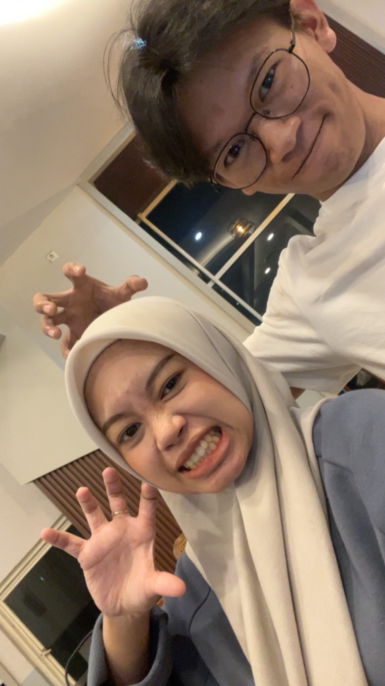

Arudji Hermatyar, S.Kom
Mahasiswa PPG Prajabatan Informatika | Universitas Islam Makassar
Visi
Menjadi pendidik yang mampu menuntun kodrat murid, menghidupi nilai-nilai Pancasila, serta menciptakan pembelajaran Informatika yang mendalam, inklusif, dan menyenangkan di era digital.
Misi
- Menerapkan pembelajaran berdiferensiasi.
- Mengintegrasikan teknologi dalam kelas.
- Menjadi teladan karakter yang baik.
Portofolio Digital
Refleksi Pengalaman Belajar Semester II
Program
PPG Prajabatan
Mata Kuliah
5 Mata Kuliah
Tahun
2026
Refleksi 4C: Pembelajaran Sosial Emosional
Connection
Materi PSE, EMC², dan School Well-Being membuka pemahaman saya bahwa guru harus mampu mengelola emosi diri sendiri dan memahami kondisi emosional murid, bukan sekadar transfer ilmu.
Challenge
Menghadapi kelas XII yang pasif dan murid mengantuk setelah dzuhur. Dulu saya cenderung menyalahkan diri sendiri, kini saya belajar merefleksikan akar masalahnya.
Concept
- 5 Kompetensi CASEL
- EMC² (Empati, Mindfulness, Compassion, Critical Inquiry)
- Siklus Experiential Learning Kolb
- School Well-Being
- Integritas Akademik
Change
- Regulasi emosi dengan mindfulness.
- Menerapkan Experiential Learning.
- Membangun School Well-Being.
- Pendekatan EMC² pada murid.
Analisis Artefak
Artefak yang dipilih: RPP Informatika Kelas XII (Pertemuan 5), LK 2.2 (Analisis Kasus Pencurian Uang SPP), LK 4.1 & 4.2 (Refleksi Diri dan Studi Kasus School Well-Being), dan Jurnal Refleksi Harian.
Alasan: Mencerminkan perencanaan pembelajaran nyata, latihan empati dalam konflik, refleksi mendalam tentang well-being, dan perjalanan emosi autentik sebagai calon guru.
Bagian Pendukung: Langkah pembelajaran dan asesmen pada RPP; analisis keteladanan guru pada LK 2.2; bagian cara menghadapi tantangan pada LK 4.1; analisis kebutuhan murid pada LK 4.2; serta catatan perasaan kecewa dan cara bangkit pada jurnal.
Kaitan Praktis
Konsep Utama: CASEL, EMC², Experiential Learning Kolb, School Well-Being, Integritas Akademik.
Perubahan ke Depan: Lebih sadar diri, lebih sabar, dan lebih kreatif dalam merancang pembelajaran yang bermakna bagi murid, serta melibatkan orang tua dan komunitas.
Refleksi 4C: Pembelajaran Mendalam dan Asesmen Lanjut
Connection
Materi ini mengajarkan saya merancang pengalaman belajar yang membuat murid memahami, mengaplikasikan, dan merefleksikan pengetahuan, bukan sekadar penyampaian materi.
Challenge
Mengubah cara pandang asesmen dari sekadar nilai akhir menjadi bagian integral proses pembelajaran (awal, formatif, sumatif).
Concept
- Prinsip Pembelajaran Mendalam
- DUP, TaRL, CRT
- Asesmen Autentik (AaL, AfL, AoL)
- Rubrik, Portofolio, Umpan Balik Deskriptif
- Taksonomi SOLO
Change
- Merancang pembelajaran kontekstual dan berpusat pada murid.
- Membiasakan asesmen awal dan diferensiasi.
- Membuat rubrik transparan.
- Menggunakan portofolio dan jurnal refleksi.
Analisis Artefak
Artefak yang dipilih: Dokumen analisis kasus pembelajaran berbasis proyek di kelas animasi SMK, laporan diskusi TaRL dan CRT, lembar kerja sintesis integrasi pembelajaran mendalam, serta refleksi dan rencana tindak lanjut kasus.
Alasan: Menggambarkan proses belajar secara utuh dari memahami konsep, menganalisis kasus nyata, merumuskan solusi, hingga merencanakan tindak lanjut.
Bagian Pendukung: Analisis masalah pada aspek perencanaan, pelaksanaan, dan asesmen; rumusan alternatif solusi (transparansi rubrik, portofolio, dll); serta uraian penerapan TaRL dan CRT.
Kaitan Praktis
Konsep Utama: Pembelajaran mendalam, DUP, TaRL, CRT, asesmen autentik, rubrik, portofolio, Taksonomi SOLO.
Perubahan ke Depan: Merancang pembelajaran kontekstual, melakukan asesmen awal, membuat rubrik transparan, menggunakan portofolio, dan melibatkan murid dalam self/peer assessment.
Refleksi 4C: PPL Mandiri
Connection
Praktik di SMAN 22 Makassar (Percabangan Elif) menyadarkan saya bahwa guru adalah pamong yang menuntun logika berpikir murid, bukan sekadar pentransfer materi.
Challenge
Kenyataan lapangan tidak sesuai teori. Banyak murid error karena salah indentasi atau keliru membedakan = dan ==. Saya harus turun personal mendampingi debugging.
Concept
- Asesmen Diagnostik & Diferensiasi
- Scaffolding (Vygotsky)
- Pembelajaran Berbasis Masalah (PBL)
- Manajemen Kelas
Change
- Beralih dari teacher-centered ke student-centered.
- Lebih banyak waktu eksperimen di komputer.
- Merancang asesmen formatif komprehensif.
- Lebih peka terhadap kondisi emosional murid.
Analisis Artefak
Artefak yang dipilih: Modul Ajar Praktik Python (Percabangan Elif), Media Pembelajaran (PPT Traffic Light/Elif), dan Dokumentasi Hasil Kerja Siswa (LKPD).
Alasan: Merepresentasikan siklus perencanaan, pelaksanaan, dan evaluasi secara utuh. Modul dan PPT bukti perencanaan inovatif, LKPD bukti hasil belajar autentik.
Bagian Pendukung: Langkah pembelajaran (Fase 3 & 4) dan asesmen formatif pada Modul; aturan emas pada PPT; serta kode hasil modifikasi siswa pada LKPD.
Kaitan Praktis
Konsep Utama: Asesmen Diagnostik, Diferensiasi, Scaffolding, PBL, Manajemen Kelas.
Perubahan ke Depan: Selalu merancang asesmen formatif komprehensif, menyiapkan strategi debugging terstruktur, dan menciptakan lingkungan kelas aman untuk bereksperimen dan gagal.
Refleksi 4C: Projek Kepemimpinan
Connection
7 Habits of Highly Effective People sangat berkaitan dengan peran saya. Sebagai Divisi Logistik, memimpin berarti mengelola diri, waktu, dan kerja sama.
Challenge
Mengubah cara pandang dari "sekadar bantu-bantu" menjadi "bagian dari sistem projek yang berdampak".
Concept
- 7 Habits (Proactive, Begin with End in Mind, Put First Things First, Think Win-Win, Seek First to Understand, Synergize, Sharpen the Saw)
- Visible Thinking Routine (VTR)
Change
- Lebih proaktif, tidak menunggu arahan.
- Lebih menghargai sinergi tim.
- Lebih peduli proses dan keseimbangan diri.
Analisis Artefak
Artefak yang dipilih: Proposal Projek Kepemimpinan Kelompok 1 "Digital Skill for Gen Z" (bagian struktur tim dan Logistik), dokumentasi kegiatan (pemasangan terminal, poster, konsumsi), dan catatan pengeluaran logistik.
Alasan: Proposal menunjukkan peran resmi, dokumentasi menunjukkan tindakan nyata, catatan pengeluaran menunjukkan tanggung jawab pengelolaan kebutuhan.
Bagian Pendukung: Halaman 9 Proposal (Logistik) mendukung Connection dan Concept; dokumentasi pemasangan mendukung Be Proactive dan Put First Things First; catatan pembelian mendukung Synergize dan Sharpen the Saw.
Kaitan Praktis
Konsep Utama: 7 Habits of Highly Effective People, VTR.
Perubahan ke Depan: Lebih proaktif, menghargai kerja tim, menjaga keseimbangan diri (Sharpen the Saw), dan membiasakan menuliskan alasan di balik keputusan (VTR) sebagai contoh berpikir kritis.
Refleksi 4C: Aswaja dan Etika Profesi Guru
Connection
Guru adalah tugas profetik (kenabian) yang menuntut keseimbangan akademik dan kesalehan spiritual. Nilai Aswaja menjadi kompas moral dalam menghadapi dinamika kelas.
Challenge
Mengubah paradigma dari teacher-centered punitif menuju pendekatan restoratif dan humanis. Melatih kesabaran saat otoritas ditantang.
Concept
- Empat Pilar Aswaja (Tawassuth, Tawazun, I'tidal, Tasamuh)
- Karakter Guru Bintang 9 (Lempu, Sombere)
- Landasan Yuridis (UU, PP, KEGI)
- Muhasabah dan Penanganan Tiga Dosa Besar Pendidikan
Change
- Internalisasi Tawadhu dan Sombere.
- Menerapkan mindful pause sebelum merespons.
- Mengganti bahasa instruksional kaku dengan yang memberdayakan.
- Dokumentasi tindakan pembinaan.
Analisis Artefak
Artefak yang dipilih: Lampiran 1 (Lembar Refleksi Diri Mahasiswa PPG: Menjadi Guru yang Moderat, Adil, dan Ramah), Lampiran 2 (Analisis Kasus Tindakan Edukatif Guru: Studi Kasus Bu Aisyah).
Alasan: Lampiran 1 bukti autentik komitmen pribadi menampilkan wajah Islam ramah. Lampiran 2 menganalisis penerapan teori dalam konflik nyata dengan orang tua.
Bagian Pendukung: Bagian "Komitmen Pribadi: Guru Ramah" pada Lampiran 1 mendukung tahap Change; bagian "Analisis Kompetensi Guru" dan "Integrasi Nilai Aswaja" pada Lampiran 2 mendukung tahap Concept.
Kaitan Praktis
Konsep Utama: Pilar Aswaja, Karakter Guru Bintang 9, Landasan Yuridis, Muhasabah.
Perubahan ke Depan: Mendengarkan murid dengan empati, berani mengakui keterbatasan, mengganti teguran kaku dengan kalimat memberdayakan, dan rutin melakukan refleksi diri (Muhasabah).